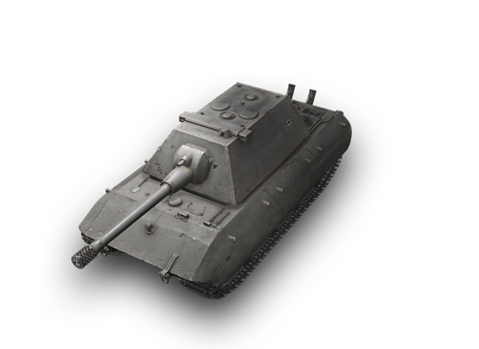
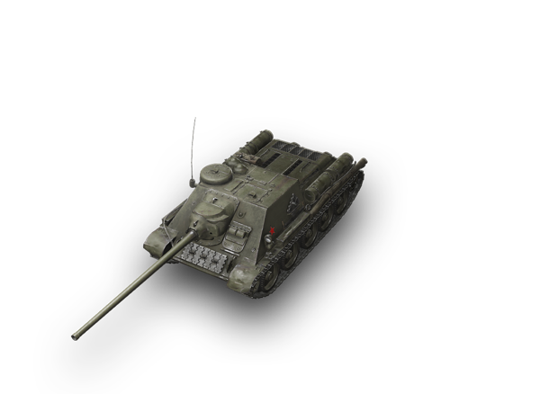
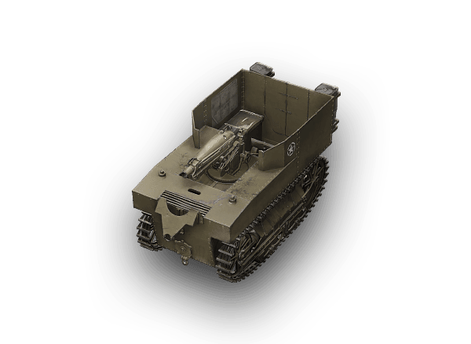
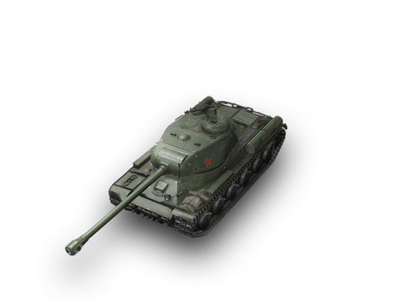
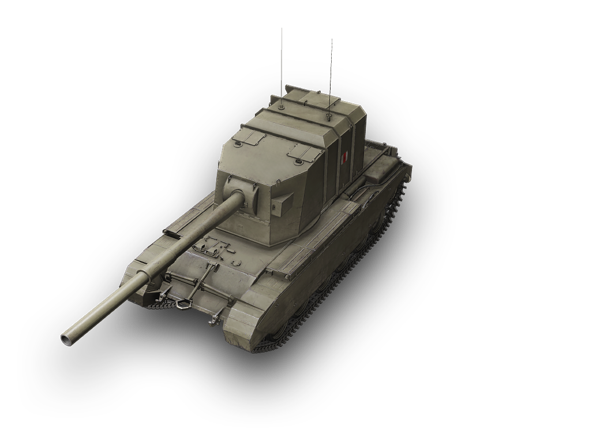
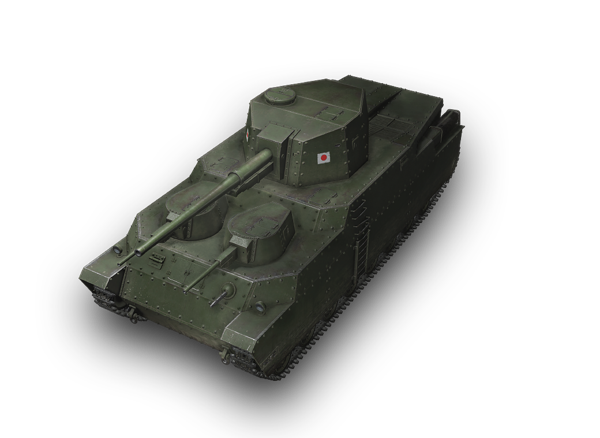
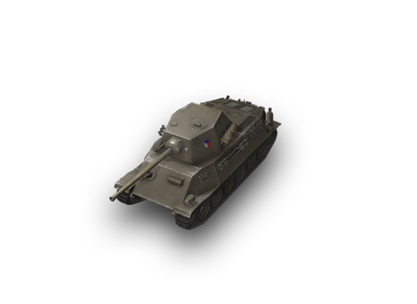
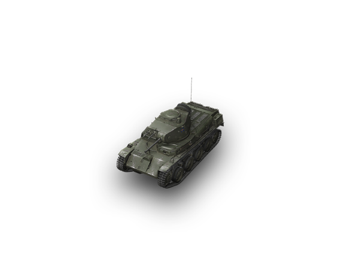
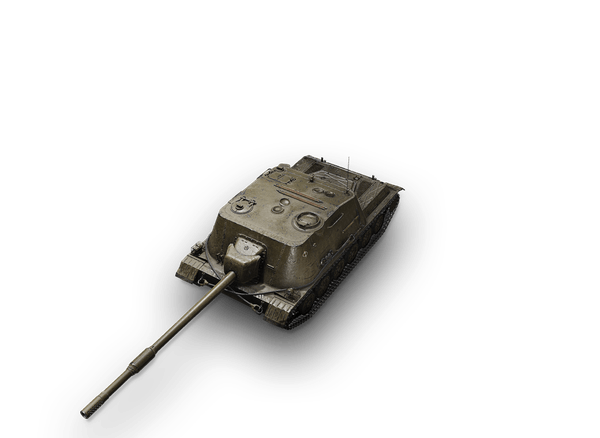
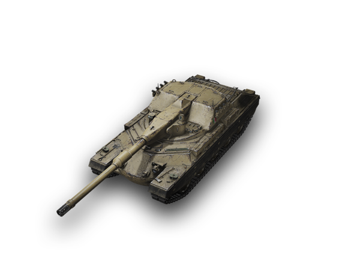

Exemples de tanks
Une sélection totalement arbitraire de tanks dans WoT
| Nom | Pays | Tier (I à X) | Catégorie | Aperçu du tank | Plus d'infos |
|---|---|---|---|---|---|
| E 100 | X |
Char lourd |
 | Cliquez ici ! ↗ | |
| SU-100 | VI |
Chasseur de char |
 | Cliquez ici ! ↗ | |
| T1 HMC | IV |
Artillerie |
 | Cliquez ici ! ↗ | |
| IS-2 | VII |
Char lourd |
 | Cliquez ici ! ↗ | |
| AMX ELC Bis | V |
Char léger |
 |
Cliquez ici ! ↗ | |
| FV4005 Stage II | X |
Chasseur de char |
 | Cliquez ici ! ↗ | |
| O-Ni | VII |
Char lourd |
 | Cliquez ici ! ↗ | |
| Škoda T 25 | VI |
Char moyen |
 | Cliquez ici ! ↗ | |
| Strv m/40L | III |
Char léger |
 | Cliquez ici ! ↗ | |
| SDP 57 Gowika | VII |
Chasseur de char |
 | Cliquez ici ! ↗ | |
| Rinoceronte | X |
Char lourd |
 | Cliquez ici ! ↗ |